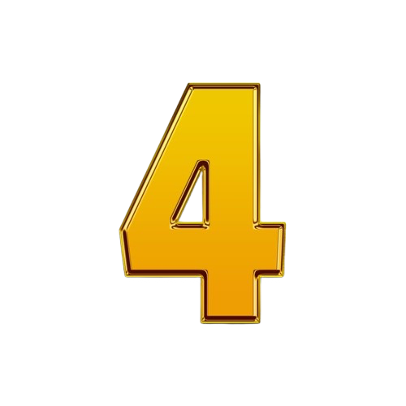
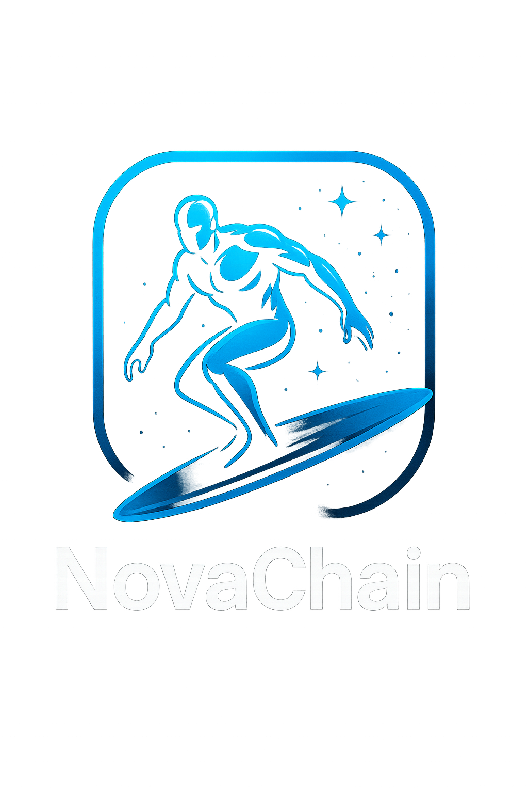

Mini-blog Real Madrid
Développement d'un blog sur le Réal Madrid en HTML/CSS.

Plateforme de rencontres
Développement d'une plateforme de rencontre en PHP & MySQL.
Réseau social type Twitter
Développement d'un réseau social en PHP, Tailwind & MySQL.

Jeu Puissance 4
Jeu interactif en JavaScript.

NovaChain – App Mobile
App React Native inspirée de Snapchat avec prise de photo, envoi, API et Expo Go.

TradBot (en cours)
Bot Discord en Python (marchés financiers).